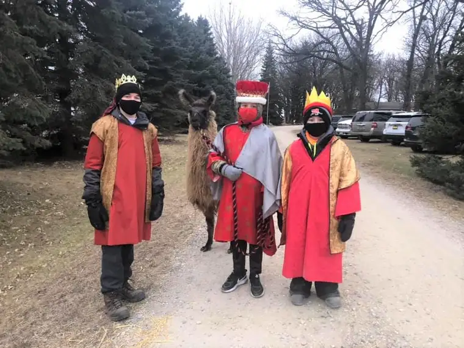
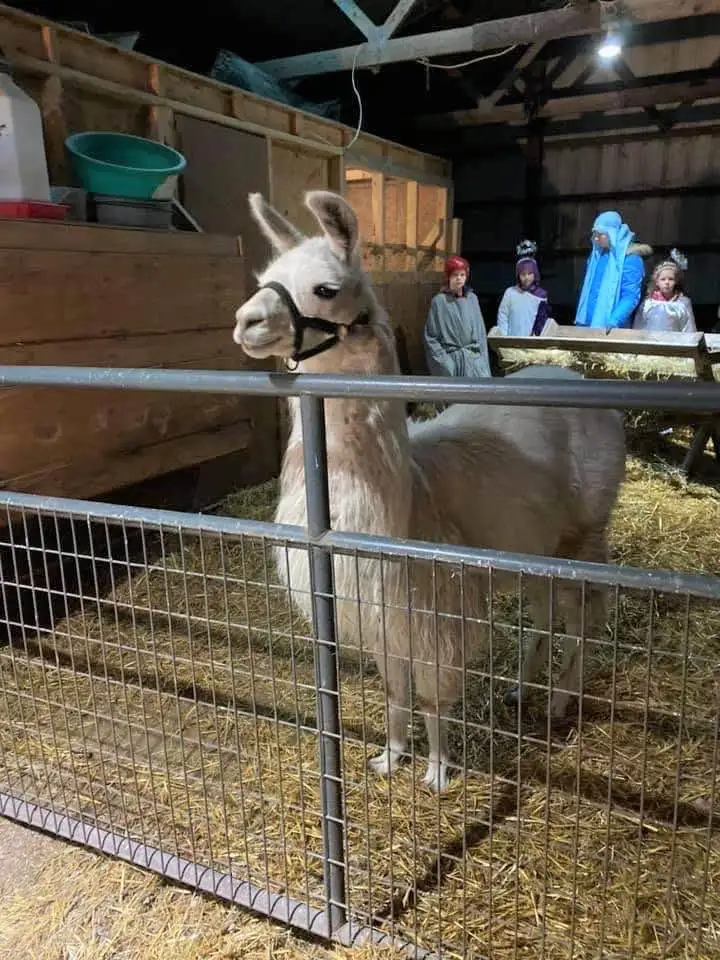
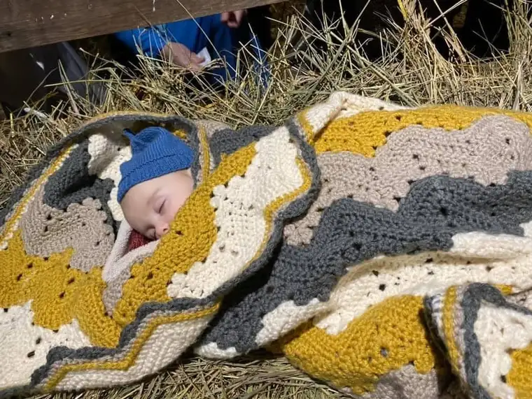
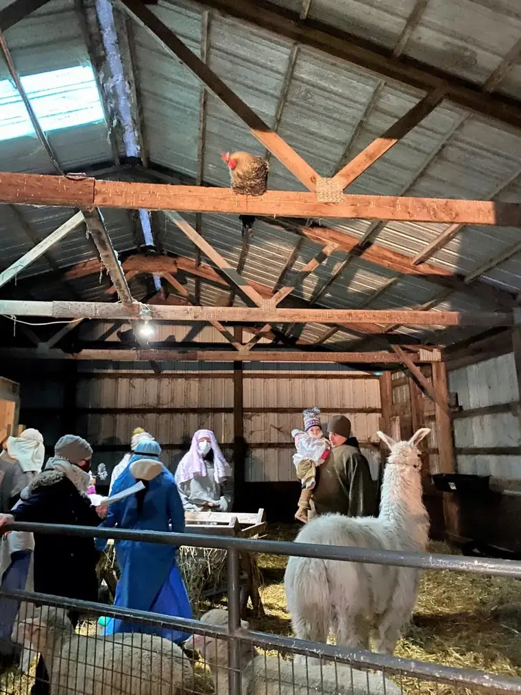
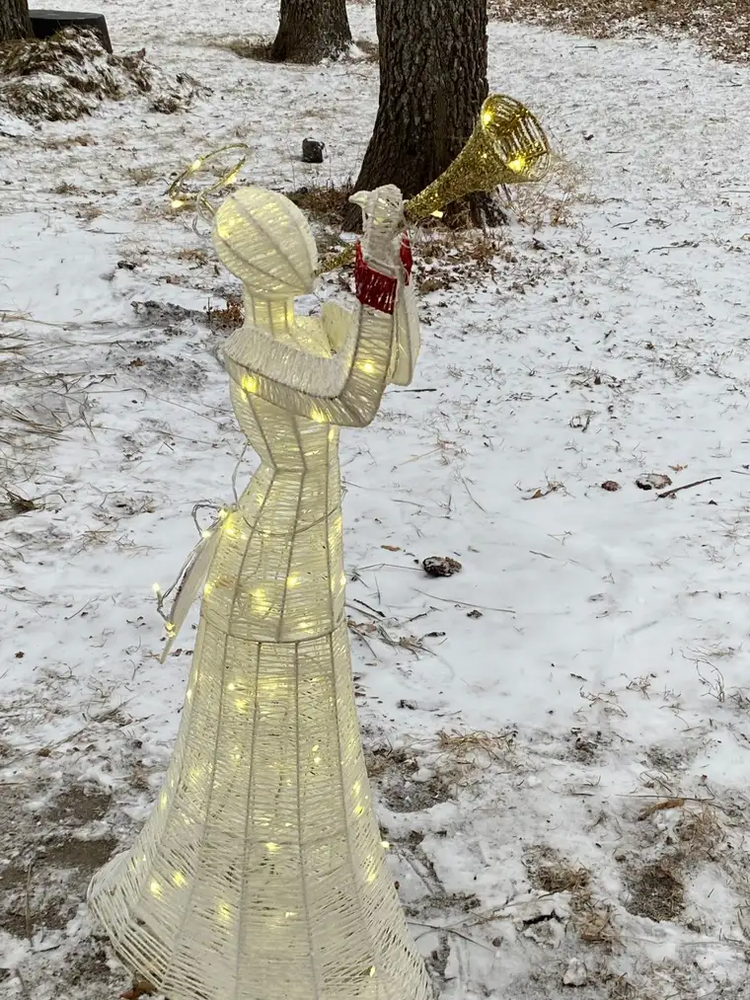

The live nativity hosted by Jason and Lynn Kotrba at their family farm in Moorhead, Minn., a few weeks ago contained within it a Christmas miracle.

Like the one delivered to our world 2020 years ago, this gift came wrapped in swaddling clothes and was laid in a manger, with Mary and Joseph near, angels peering in, and animals making room for the babe in their barn.

Little baby Michael, born in August, won’t remember the time he played the role of baby Jesus his first Christmas 2020, but his parents and seven siblings will undoubtedly happily relive the memories for him – of how sweetly he slept in the straw while visitors came to see, rekindling hope in their hearts in a year so dark, so in need of light.

Only a few visitors who passed by the barn where the manger sat for three days know of the miracle, and how it began. Lynn says that until recently, she was protective of telling it herself. But now, she’s glad to share about how God has worked in the family’s lives through their youngest’s arrival.
The story really begins in April 2012. Jason, the father of five children and principal of a Catholic elementary school in Fargo, N.D., was at a conference in Texas. In order to get some additional rest and perspective, he’d gone to a nearby monastery to take part in a silent retreat. His last day there, Jason went outside to the garden, and while praying, sensed the comforting presence of Our Blessed Mother. He left feeling certain that their family would be blessed by another baby, a boy, and that his name would be Michael.
While he was gone, Lynn learned she was pregnant, but worry set in. “I was a bit worked up by the fact that we were expecting another baby. I wasn’t sure how we could afford another child,” Lynn admits. After his return, the morning of their oldest daughter’s Confirmation, she told Jason the news, to which he replied, “I know.”
“During our pregnancy, he said he thought it was a boy, but then Ella was born,” Lynn shares, “and then, later, Ava.” Following Ava, their seventh child, the couple experienced three miscarriages, and it seemed the baby boy Jason had felt would be part of their family might not be after all.
But in February 2020, just before the Covid-19 pandemic broke out in the United States, they learned they were expecting again, and that it was a boy.
Michael was born on Aug. 5, six weeks early, by emergency C-section. Lynn had contracted a virus, initially thought to be Covid, which was passed on to the baby, and was experiencing a temperature of 104 degrees. “He was in a fight of his own to live,” Lynn says.
At birth, other than “a very rapid heartbeat, he had nothing going for him,” Lynn continues. “When we went to the hospital that day, he had not been moving for over eight hours,” and when born, “he wasn’t breathing.” Michael spent 10 days in the neonatal intensive care unit (NICU) on oxygen, had a line to his heart, and a failing liver, Lynn relays. Doctors began to feel his only hope would be with a specialist another state far away.
During this time of uncertainty, Lynn says she found comfort in the prayers going out in many directions from family and friends.
Then, on day five – the couple’s anniversary – upon meeting with Michael’s doctor, Lynn and Jason heard surprising words. As she recalls it, the doctor told them, “I don’t know what happened, but this kid’s liver is highly improved.” Five days later, Michael was released and welcomed home.
And in mid-December 2020, as a rooster sat vigil on a raft in their barn, and a llama stood guard near his cradle, this little miracle baby got to play the starring role in a live representation of the nativity of Jesus, reliving the night our Savior was born, when Christ came to the world to bring us light and hope.

“It was sort of surreal, being able to have him in the manger,” Lynn says. “Michael’s just a miracle, and though I wouldn’t necessarily recommend having a baby during a pandemic, at the same time, this all brings that hope that things will get better, that we will all be okay, that we’ll get through this.”
It’s this message the family wanted to give others this Christmas, through having a live nativity friends and strangers alike could enjoy with them, to remind them that, as Lynn concludes, despite everything 2020 has brought, “We will have Christmas, we will celebrate the birth of Jesus, and Jesus will take care of us.”

The Live Nativity at the Kotrba Farm was hosted by the family and their nonprofit, Harvest Hope Farm, an initiative to find a cure for Huntington’s Disease.
What gift did Baby Jesus bring you this Christmas?